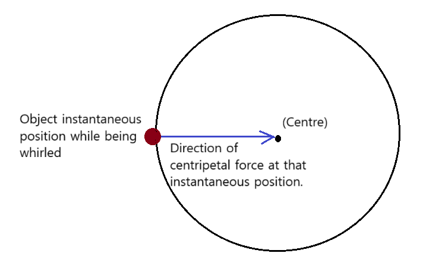

Section 6.2: Centripetal Force
Centripetal force is the net force directed toward the center of a circular path that keeps an object moving in circular motion. It is not a new type of force but results from other forces such as tension, gravity, or friction.
Key Concept: Without a centripetal force, an object would move in a straight line tangent to the circle.
Formula for Centripetal Force
The centripetal force required to keep an object of mass m moving at speed v along a circle of radius r is:
\( F_c = \frac{m v^2}{r} \)
This force can be provided by tension, gravity, friction, or other forces depending on the scenario.
Real-life Examples
- Car turning on a circular track: friction provides the centripetal force.
- Satellite orbiting Earth: gravitational pull provides the centripetal force.
- Ball on a string being swung in a circle: tension provides the centripetal force.
Centripetal Force Diagram
Chapter 6.2 Review Questions
- Define centripetal force in your own words.
- State the formula for centripetal force and define each variable.
- Explain why an object in circular motion accelerates even at constant speed.
- A 2 kg ball rotates in a circle of radius 0.5 m at 4 m/s. Calculate the centripetal force.
- Identify the source of centripetal force in a satellite orbiting Earth.
- Explain the role of friction as a centripetal force for a car turning on a circular track.
- A car of mass 1000 kg rounds a curve of radius 50 m at 20 m/s. Find the required centripetal force.
- Describe what happens if the centripetal force disappears suddenly.
- Compare centripetal force and centrifugal effect in a rotating reference frame.
- Explain the difference between centripetal force and centripetal acceleration.
- Calculate centripetal acceleration for a 1.5 m radius object moving at 3 m/s.
- Identify forces providing centripetal acceleration in a rollercoaster loop.
- Describe how tension in a string acts as centripetal force for a swinging object.
- A 5 kg object moves at 6 m/s in a circle of radius 2 m. Find the centripetal force.
- Explain why mass affects the magnitude of centripetal force.
- Calculate the speed of a 2 kg ball if the centripetal force is 16 N and radius 1 m.
- Explain why higher speed increases required centripetal force.
- Give a real-life example of circular motion where gravity provides centripetal force.
- Explain why a car may skid if friction is insufficient for the required centripetal force.
- Summarize the relationship between centripetal force, mass, velocity, and radius in your own words.